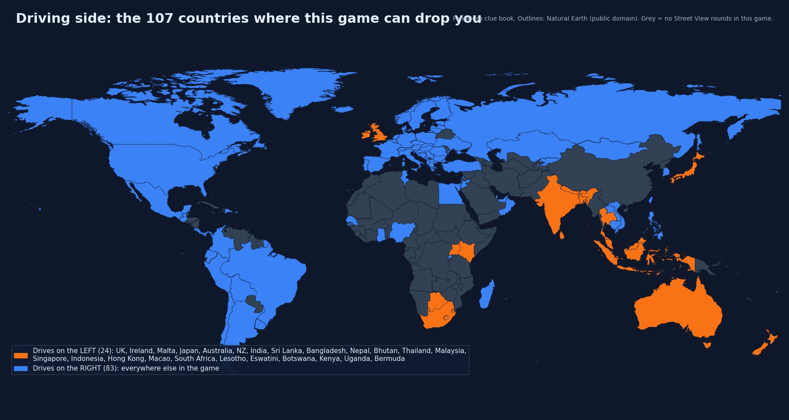
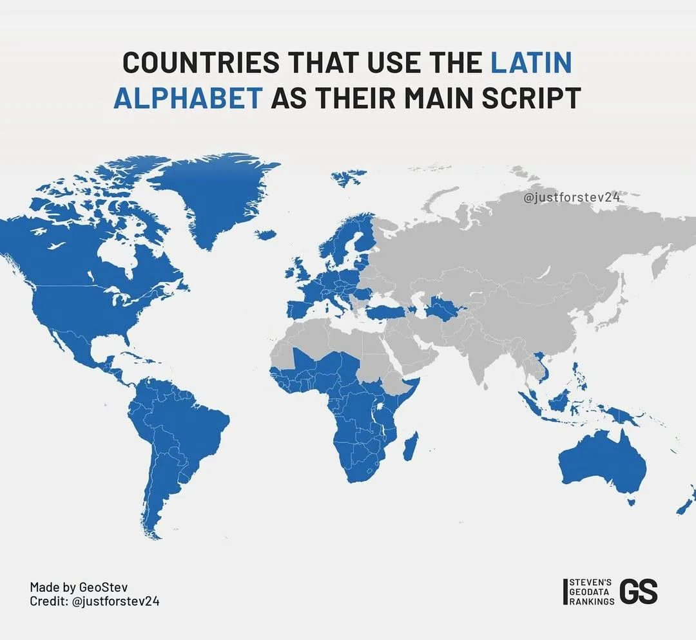
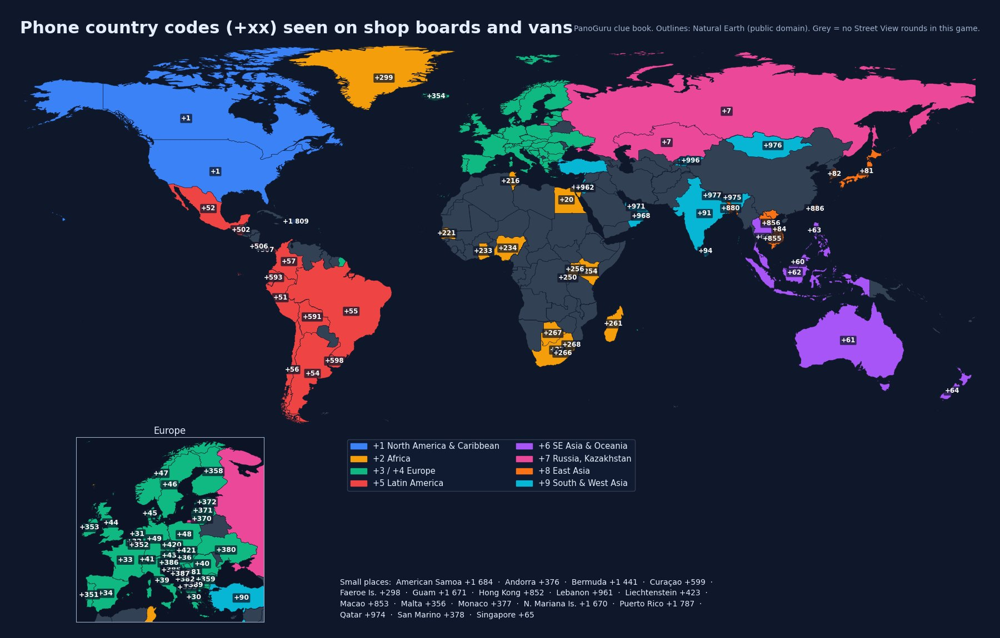
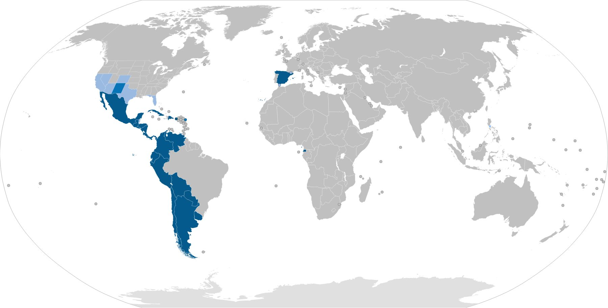
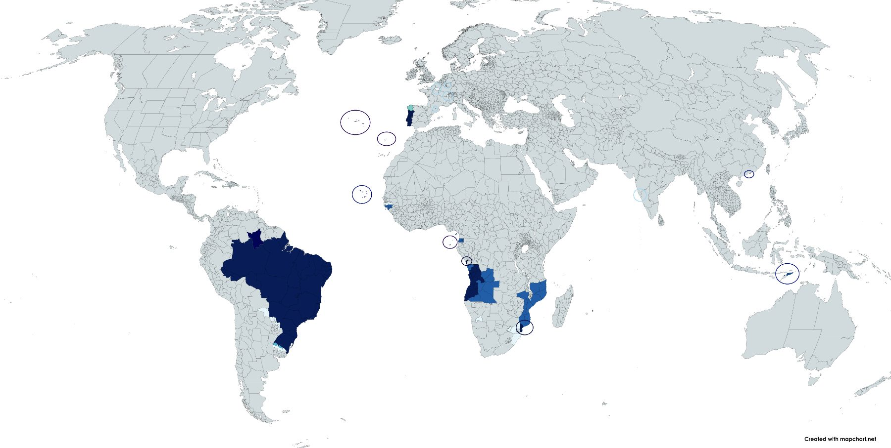

solid reliable rule community observation, usually right ≈ rough / regional, treat as a hint
Scoring reminder: 5,000 × e−km/1493. Guessing the right country but 500 km off still gives ~3,600; the wrong continent gives ~0. Country first, always.
Drives on the LEFT (the 24 covered countries in this game) solid: United Kingdom, Ireland, Malta, Japan, Australia, New Zealand, India, Sri Lanka, Bangladesh, Nepal, Bhutan, Thailand, Malaysia, Singapore, Indonesia, Hong Kong, Macao, South Africa, Lesotho, Eswatini, Botswana, Kenya, Uganda, Bermuda.
Everything else drives on the RIGHT: all of continental Europe (incl. Faroe, Greenland, Iceland), the Americas (incl. Puerto Rico, Curaçao), Russia and Central Asia, the Middle East, Turkey, Taiwan, South Korea, Vietnam, Cambodia, Laos, Mongolia, Philippines, Ghana, Nigeria, Senegal, Rwanda, Tunisia, Egypt, Madagascar, Guam, N. Marianas, American Samoa.
Tip: if no car is visible, use road markings (centre line vs. edge) and which side the arrows/bollards with red reflectors face; or the position of the Google car over the lane.

| Looks like | Script | Covered countries |
|---|---|---|
| Привет Київ Москва | Cyrillic | Russia, Ukraine, Bulgaria, Serbia (also Latin), North Macedonia, Montenegro (mostly Latin), Mongolia, Kazakhstan, Kyrgyzstan. Ukraine: letters і, ї, є, ґ. Russia: ы, э, ъ, no і. Bulgaria: ъ common, no ы/э. Serbia/N. Macedonia: ј, љ, њ, ћ, џ (Macedonian also ѓ, ќ, ѕ). Mongolia: ө, ү. Kazakh: ә, ғ, қ, ң, ұ, ү, һ. Kyrgyz: ө, ү, ң. |
| Αθήνα Ελλάδα | Greek | Greece only (Cyprus has no coverage). |
| شارع المدينة | Arabic | Jordan, UAE, Qatar, Oman, Tunisia (+ French), Egypt (little coverage), Lebanon (+ French/English). Israel has Arabic as the second line under Hebrew. |
| תל אביב | Hebrew | Israel only. |
| नई दिल्ली | Devanagari | India (Hindi, Marathi), Nepal. Nepali signs often mix English. |
| சென்னை | Tamil | Tamil Nadu (India), Sri Lanka (with Sinhala), Singapore/Malaysia (minor). |
| කොළඹ | Sinhala (round letters) | Sri Lanka only. |
| ঢাকা কলকাতা | Bengali | Bangladesh, West Bengal (India). |
| ಬೆಂಗಳೂರು / హైదరాబాద్ / കൊച്ചി / અમદાવાદ / ਪੰਜਾਬ | Kannada / Telugu / Malayalam / Gujarati / Gurmukhi | Indian states: Karnataka / Andhra-Telangana / Kerala / Gujarat / Punjab. Great for pinpointing the state inside India. |
| กรุงเทพ | Thai (little circles at letter starts) | Thailand. |
| ວຽງຈັນ | Lao (rounder, like Thai) | Laos. |
| ភ្នំពេញ | Khmer (tall, spiky) | Cambodia. |
| 東京 大阪 / 台北 / 香港 | Chinese characters | Japan (with kana), Taiwan, Hong Kong, Macao, some Singapore/Malaysia. Japan: hiragana/katakana (ひらがな カタカナ) present. Taiwan/HK: traditional characters only, no kana, no hangul. |
| 서울 부산 | Hangul (circles + straight strokes) | South Korea only. |
| ཐིམ་ཕུ | Tibetan-style (Dzongkha) | Bhutan. |
| Latin (ABC) | Latin | Most of the world: see the next section to pick the language. |

| You see | Language | Where (covered) |
|---|---|---|
| ñ, ¿ ¡, "ll" | Spanish | Spain, Mexico, Argentina, Chile, Colombia, Peru, Ecuador, Bolivia, Uruguay, Guatemala, Dominican Rep., Puerto Rico, Panama, Costa Rica. |
| ã, õ, ç + "ção", "nh", "lh" | Portuguese | Portugal, Brazil. Brazil: "Rua", "Av.", prices "R$"; Portugal: "Rua", "Largo", "€". |
| é è ê à ç œ, "Rue", "Route de" | French | France, Belgium (south), Switzerland (west), Luxembourg, Quebec (Canada), Tunisia, Senegal, Lebanon, Monaco, Andorra (with Catalan). |
| ß, ä ö ü, long compound words, "Straße" | German | Germany, Austria, Switzerland (north/east), Luxembourg, Liechtenstein, Belgium (small east). |
| ij, aa/ee/oo, "straat", "weg" | Dutch | Netherlands, Belgium (north, "Flanders"), Curaçao. South Africa: Afrikaans ("straat", "weg", "Kaap"). |
| "Via", "Piazza", double consonants (zz, tt) | Italian | Italy, Switzerland (Ticino), San Marino, Malta (Maltese "Triq" = street). |
| ą ę ł ń ó ś ź ż, "sz", "cz", "rz" | Polish | Poland. |
| ř ě ů ď ť ň | Czech | Czechia. |
| ľ ĺ ŕ ô ä | Slovak | Slovakia. |
| ő ű, "sz", "gy", "ny", "utca" | Hungarian | Hungary (plus Hungarian minority signs in Romania/Slovakia). |
| ă â î ș ț, "strada", "-ului" | Romanian | Romania (and Moldova, no coverage). |
| č ć đ š ž, "ulica" | Croatian / Bosnian / Serbian (Latin) / Slovene | Croatia, Bosnia, Serbia, Montenegro, Slovenia. Slovene has no ć/đ and uses "cesta", "ulica". |
| ç ğ ı İ ş ü ö, "sokak", "caddesi" | Turkish | Turkey. |
| ë, "rruga", lots of q/xh/zh | Albanian | Albania (and Kosovo/N. Macedonia minority). |
| ø, å, "gate", "vei" | Norwegian | Norway. Danish also has ø/å but "gade", "vej" (Denmark). |
| ä ö å, "gatan", "vägen" | Swedish | Sweden (and Finnish coast). |
| ä ö, double vowels/consonants, "-katu", "-tie" | Finnish | Finland (often bilingual with Swedish). |
| õ ä ö ü, "tee", "mnt" | Estonian | Estonia. |
| ā ē ī ū ķ ļ ņ ģ, "iela" | Latvian | Latvia. |
| ą č ę ė į š ų ū ž, "gatvė" (g.) | Lithuanian | Lithuania. |
| ð þ æ, "vegur", "gata" | Icelandic | Iceland. Faroese also ð, "vegur". |
| w, y, ll, dd, "Heol", bilingual with English | Welsh | Wales (UK). Irish Gaelic bilingual signs ("Bóthar", fadas á é í) = Ireland. |
| ă â ê ô ơ ư đ + many tone marks (ấ ờ ệ) | Vietnamese | Vietnam. |
| "Jalan" / "Jl.", "Desa", no accents | Indonesian / Malay | Indonesia ("Jl.", "Kecamatan"), Malaysia ("Jalan", "Kampung", "Taman"), Singapore, Brunei. |
| "Barangay", "Brgy", "Sitio", "ng", "mga" | Filipino (Tagalog) | Philippines (lots of English too). |
| "Barabara", "Mtaa", "Duka", "Hoteli" | Swahili | Kenya, Uganda (with English), Rwanda (Kinyarwanda: "umu-", "aba-"). |
| English only, "St", "Rd", "Ave" | English | USA, Canada, UK, Ireland, Australia, NZ, South Africa, Ghana, Nigeria, Kenya/Uganda, India (mixed), Philippines, Singapore, Malta, Guam. |
| "Carrer", "Avinguda", "Plaça" | Catalan | Catalonia, Valencia, Balearic Islands (Spain), Andorra. |
| "Rúa", "Praza" | Galician | Galicia (NW Spain; your home region on the map). |
| "Kalea", tx, tz, k everywhere | Basque | Basque Country (Spain) and SW France. |
| Stop sign says | Country |
|---|---|
| STOP | Almost everywhere in Europe, Australia, NZ, UK, Spain, Portugal, Italy, Germany, Nordics, Russia (also СТОП), Turkey uses DUR, Israel uses a hand symbol. |
| ALTO | Mexico, Guatemala, Panama, Costa Rica (Central America). |
| PARE | Argentina, Chile, Peru, Colombia, Ecuador, Bolivia, Uruguay, Dominican Republic, Puerto Rico, Brazil (PARE in Portuguese too). |
| ARRÊT | Quebec (Canada). France itself uses STOP. |
| 止まれ | Japan (red inverted triangle, not octagon). |
| 정지 | South Korea. |
| 停 | Taiwan / Hong Kong. |
| หยุด | Thailand. |
| BERHENTI | Malaysia (Indonesia uses STOP). |
| قف | Arabic countries (with STOP). |
| STOP in red octagon with white border, plus "Stop" in Devanagari | India (often "रुकिए"/"STOP"). |
| "Street" | Language / country |
|---|---|
| Calle, Avenida (Av.), Carretera, Camino | Spanish |
| Rua, Avenida, Estrada, Travessa | Portuguese |
| Rue, Avenue, Chemin, Route (D 123 = French departmental road) | French |
| Straße (Str.), Weg, Gasse, Platz | German |
| Via, Viale, Corso, Piazza, Strada Provinciale (SP) | Italian |
| Straat, Laan, Weg, Plein | Dutch |
| ulica (ul.), aleja (al.), plac | Polish |
| ulice, náměstí, třída | Czech |
| utca (u.), út, tér | Hungarian |
| strada (str.), bulevardul (bd.), calea | Romanian |
| улица (ул.), проспект, шоссе | Russian; Ukrainian uses вулиця (вул.), проспект |
| οδός, λεωφόρος | Greek |
| Sokak (Sk.), Caddesi (Cd.), Bulvarı | Turkish |
| gate, vei (Norway); gade, vej (Denmark); gatan, vägen (Sweden); katu, tie (Finland) | Nordics |
| Jalan (Jl./Jln.), Lorong, Taman | Indonesia / Malaysia |
| Đường, Phố, Quốc lộ (QL = national road) | Vietnam |
| ถนน (Thanon), ซอย (Soi) | Thailand |
| Road, Street, Nagar, Marg, Colony, Chowk | India |
Exit / motorway words: Spain "Salida", France "Sortie", Germany "Ausfahrt", Italy "Uscita", Portugal "Saída", Belgium (Flanders) "Uit", Netherlands "Afrit" (often just a number), Poland "Zjazd", Turkey "Çıkış", Russia "Выезд", Sweden "Avfart", Norway "Avkjøring", Brazil "Saída", Mexico "Salida". Town-sign colour: Spain white with black text and blue road signs, France white with red border (town entry), Germany yellow, Italy white/black, Poland green/white, Czech white, Austria blue, Netherlands blue, Belgium white, Portugal white, Hungary white, Romania white, Croatia yellow, Norway/Sweden yellow (and blue), Finland white, UK white/black, Ireland white/green, Russia white/blue, Ukraine white/blue, Turkey blue/white.
| Clue | Points to |
|---|---|
| Double yellow centre line, white edge lines solid | USA, Canada, Mexico, Brazil (yellow centre), Argentina, Chile ≈ (mostly white), Colombia, Peru, Ecuador, Bolivia, Central America, Philippines (often), Thailand (yellow centre common), Indonesia (yellow medians on national roads), Malaysia (some), South Korea (yellow centre on 2-way roads), Japan (yellow = no overtaking), Taiwan (yellow centre), Norway (yellow centre, white edges), Finland (older yellow centre, newer white). |
| All white lines solid | Most of Europe (Spain, Portugal, France, Germany, Italy, Benelux, Poland, Czechia, Slovakia, Hungary, Romania, Balkans, Baltics, Sweden, Denmark), Russia, Ukraine, Turkey, Australia, NZ, India (mostly), Chile ≈, Mongolia. |
| Yellow edge lines (centre white) solid | South Africa, Botswana, Lesotho, Eswatini, Kenya, Israel, UAE; Jordan ≈, Oman ≈. Ireland: dashed yellow edge lines. Switzerland: white lines but yellow bus/taxi lanes and yellow zebra crossings. |
| Yellow diamond warning signs solid | USA, Canada, Mexico, Central & South America (Brazil, Argentina, Chile, Colombia, Peru, Ecuador, Bolivia, Uruguay, Guatemala, DR, Puerto Rico), Australia, NZ, Japan, Thailand, Malaysia, Indonesia, Philippines, Ireland (the only European country with yellow diamonds). |
| Red-bordered triangle warning signs solid | Europe (white inside; Sweden/Finland/Greece/Iceland/Poland yellow inside), Russia, Turkey, India, South Africa, Kenya, Israel, Jordan, South Korea, Vietnam, Sri Lanka, Bangladesh. Taiwan and Cambodia ≈ mixed shapes. |
| Speed limits in mph | USA, UK (round sign, white with red border), Puerto Rico, Guam, N. Marianas, American Samoa. (Bermuda drives left with UK-style signs but uses km/h, limit 35.) |
| Green motorway / highway signs | USA, Canada, Mexico, Brazil, Chile, Australia, NZ, Japan, Philippines, Italy (motorway green, other roads blue), Switzerland, Czechia, Slovakia, Hungary, Poland, Croatia, Slovenia, Serbia, Romania, Bulgaria, Greece, Turkey, Denmark, Sweden, Finland, Russia (green motorway, blue elsewhere) ≈ for the last six. |
| Blue motorway signs | Spain, Portugal, France (green for main non-motorway routes), Germany, Austria, Netherlands, Belgium, Luxembourg, UK, Ireland (green for national roads), Norway ≈, Ukraine ≈. |
| Chevron curve boards ≈ | Black on yellow: USA, Canada, Australia, NZ, Mexico. Red/white: Germany, Poland, Czechia, Slovakia, Hungary, Croatia. White on blue: France, Spain ≈, Portugal ≈. White on black: UK. Yellow/black: Ireland. |
| Km markers on the roadside | Brazil: white km boards with road number (BR-xxx) ≈. Spain: white plaques with road number (N-, A-, two-letter province codes). France: small white stones with red/yellow top (D roads yellow top, N roads red top). Italy: white stone "km". Russia: blue km boards. Thailand: white concrete km posts with Thai numerals. Malaysia: black/white km posts. Argentina: white km stones. |
| Road number prefixes on signs | Spain A-/AP- (motorway), N- (national), plus two-letter province roads (e.g. CL-, GR-, PO-); France A, N, D (D = department); Germany A, B, L/K; Italy A, SS, SP; Poland A, S, DK, DW; UK M, A, B; Ireland M, N, R; Brazil BR-; Mexico MEX; USA Interstate shield, US route shield, state route; Australia M/A/B/C; India NH (national highway), SH; Russia M-, R-, A-; Turkey D-/O-; Thailand numbered shields; Philippines "N" numbers; Chile "Ruta 5"; Argentina RN/RP. |
| Pedestrian crossing style | Zebra white everywhere; Switzerland yellow; Taiwan/Japan white; Russia white with yellow stripes between (yellow/white zebra) ; Ukraine similar; Czech/Slovakia white; UK zebra with black/white striped poles and orange globes (Belisha beacons). |
Bollards are the strongest Europe tell once you know them. Descriptions from the GeoGuessr community; verify with your own screenshots over time.
| Country | Bollard |
|---|---|
| Spain | Slim white post, slightly split/hollow-looking top, yellow reflector (often numbered). |
| Portugal | Thin white post, narrower at the top, with a small rectangular reflector ≈. |
| France | White rounded post with a red band/reflector near the top that wraps around. |
| Italy | White post with a black top, red stripe inside the black top, reflector set into the post. Albania uses the same design. |
| Germany | Thick flat-profile white post, black band around a long vertical reflector, two screws (Luxembourg: same with three screws). |
| Austria | Black top, dark red/purple reflector mounted outside the post, sometimes a nub on top. Slovenia and Montenegro: black top with external red reflector too. |
| Switzerland | White post with black band and reflector, similar to Germany/Austria family. |
| Czechia / Slovakia | White post with black cap and a split rectangular reflector; square reflector on the back. |
| Hungary | Like Germany but red reflector, rounder/flatter top, thinner. |
| Poland | White post with a red vertical stripe on one side only. |
| Croatia | Black top with red reflector. |
| Greece | White post with a black diagonal stripe near the top ≈. |
| Denmark | White post with a red middle band and white reflector inside the band. |
| Finland / Estonia | White posts with a black band and reflector (Estonia often two bands) ≈. |
| Sweden | Black-and-white, often wedge-shaped, grey reflector (orange at junctions). |
| Norway | Slim white post with one rectangular reflector; orange flexible snow stakes in winter. |
| Latvia / Lithuania | Red-topped white post (Lithuania: orange/yellow reflector). |
| UK | Alternating black and white bands on a thin flexible post; red reflector left, white right. Ireland: similar black/white with yellow. |
| Russia / Ukraine | Black-and-white "barber pole" striped posts (Ukraine shorter/squatter). |
| Romania | White plastic with black sloped cap, rounded. |
| Japan | Rare; delineators vary (white/red or yellow/black) ≈. Better Japan tells: white guardrails, concrete poles, kei cars. |
| South Korea | Yellow flexible posts in cities; rural posts with round yellow/white reflectors. |
| Thailand | Square concrete posts, white base with black top or stripes. |
| Malaysia | White post divided into five sections, sometimes a red reflector. |
| Indonesia | Yellow and black stripes with a red rectangle near the top. |
| Cambodia | Red pyramid top, red/white alternating pattern. |
| Mongolia | Bowling-pin shape, white with two red bands. |
| Sri Lanka | Chunky black base with white km marker. |
| Australia | White flat post; red reflector on the left, white on the right. NZ: white post with a red band wrapping around. |
| Americas | USA/Canada: rarely bollards, instead reflector tabs on guardrails and thin flexible delineators. Mexico: white concrete posts, some yellow tops. Peru: concrete, yellow top/white bottom. Colombia: white rectangular bollards on guardrails. Ecuador: round white/red striped posts. Uruguay: square white. Brazil: none standard (look for blue km markers). |
| Plate look | Country |
|---|---|
| Yellow front and rear solid | Netherlands, Luxembourg, Israel (yellow with blue strip), Colombia (yellow), Laos ≈. |
| Yellow rear, white front solid | UK, Hong Kong, Sri Lanka, Kenya ≈, Gibraltar. |
| Black with white text solid | Malaysia, Indonesia (older private plates black; since 2022 new plates are white; yellow = commercial), Singapore (black or white), Macao, older Argentina (black, white text; new Mercosur plates white). |
| White with blue EU strip on the left | EU countries. Italy also has a blue strip on the right. Belgium: red characters. Portugal: older plates have a yellow strip on the right. Ireland: county name in Irish on top. |
| White with blue/yellow strip | Ukraine (flag strip). Russia: white with small flag, region number. Kazakhstan: white with blue strip. Turkey: white with blue strip "TR". |
| Long white plate, often two-line on trucks | Russia, Ukraine, Mongolia (white), Kyrgyzstan. |
| White with green text ≈ / mixed colours | Japan: white (private), yellow (kei cars, very common), green (commercial). South Korea: white (newer), green (older), yellow (taxis). |
| Short, wide plates with state designs | USA (hugely varied, one plate often only at the rear in many states), Canada (province plates), Mexico (state plates), Australia (state colours: NSW yellow, QLD maroon/white, VIC white-blue, WA blue-white ≈). |
| Mercosur white with blue strip and country flag | Brazil (also grey older plates), Argentina (also black older), Uruguay, Paraguay (no coverage). |
| Yellow commercial, white private | India (white private, yellow taxis/trucks, green EVs), Thailand (white private, yellow taxis/trucks), Vietnam (white, yellow commercial since 2020), Philippines (white; older plates green text ≈). |
| White with red/blue province codes | South Africa (varies by province: GP, WC, KZN on the plate), Botswana (white, B prefix), Kenya (K.. letters). |
| Chile | White plates, "BB·BB·12" style; Peru white; Ecuador white (orange = taxi); Bolivia white with blue ≈. |
Each card: driving side · language/script · road and sign tells · nature · the "one thing" to remember. All countries listed here have Street View coverage.
Right · Spanish (ñ), plus Catalan/Galician/Basque signs · white lines, blue road signs, yellow-reflector bollards, "Salida", roads N-/A-/two-letter province codes · dry centre, green north (Galicia: eucalyptus + slate roofs + "Rúa") · hollow-top bollards.
Right · Portuguese (ã, ç) · "Rua", white lines, blue motorway signs, azulejo street tiles, obelisk bollards with red reflector · cobbled pavements (calçada), eucalyptus + pine · older plates with yellow right strip.
Right · French · red-bordered town-entry signs, D-road yellow-topped km stones, white bollards with red band, "Rue de …" blue plaques · shutters on windows, plane trees along roads · "Sortie".
Right · Italian · "Via", blue (SS/SP) and green (A) signs, black-topped bollards with red stripe, white km stones, plates with blue strips both sides · Fiat Pandas, stone villages, cypress · "Uscita".
Right · German (ß) · yellow town signs, thick white bollards with black band, grey guardrails, "Ausfahrt", Autobahn blue · tidy villages, bike lanes · lots of VW/BMW.
Right · Dutch (ij) · yellow plates, flat land, red cycle paths everywhere, green/white striped junction posts, blue signs · brick houses, canals.
Right · Dutch (north) / French (south) · plates with red text, white town signs, concrete roads with seams · brick houses, grey skies.
Left · English (Welsh in Wales, Gaelic in Scotland) · yellow rear plates, mph, black/white banded bollards, zebra crossings with Belisha beacons, hedges and stone walls · red post boxes.
Left · English + Irish bilingual signs · yellow diamond warning signs (unique in Europe), dashed yellow edge lines, km/h, green road signs, plates with county names · very green, stone walls, bungalows.
Right · Polish (ł ż ś) · green town signs, concrete "ladder" poles, bollards with red stripe on one side, "ul." · flat farmland, brick churches.
Right · ř/ě/ů (CZ), ľ/ô (SK) · black-capped bollards, white town signs with black text (CZ), blue road numbers · forests, pastel village houses · Škodas (CZ).
Right · Hungarian (ő ű, "utca") · white town signs, concrete poles, green motorway signs, flat plains (puszta) · "Tér", "Út".
Right · Romanian (ă ș ț) · "strada", concrete round poles, horse carts, stray dogs, Dacia cars, orthodox churches · Carpathians.
Right · č ć š ž (Latin) or Cyrillic (Serbia, N. Macedonia, Bulgaria, Montenegro) · Croatia: yellow town signs, red-roofed coast; Slovenia: alpine, very tidy; Serbia: Cyrillic + Latin mixed; Bulgaria: Cyrillic, yellow-inside warning triangles ≈; Albania: "rruga", Mercedes everywhere; N. Macedonia: Cyrillic with ќ ѓ.
Right · Greek script (Latin transliteration below) · yellow-inside warning triangles, diagonal-stripe bollards, olive trees, white houses, blue signs · "οδός".
Right · Turkish (ğ ş ı) · "DUR" stop sign, blue road signs, white lines, "Sokak/Caddesi", red flags, mosques, white km stones · plates white with "TR" blue strip.
Right · Cyrillic (ы, э) · blue road signs, concrete poles with holes, Ladas, barber-pole bollards, wooden houses with carved windows, birch forests · huge: use region codes on plates (last 2-3 digits) and climate.
Right · Cyrillic with і ї є · plates with blue/yellow strip, "вул.", white/blue signs, often older blurry coverage · black soil fields, sunflowers.
Right · Norway: yellow centre lines, ø/å, fjords, wooden red/white houses, tunnels. Sweden: all-white lines, ä/ö, wedge bollards, yellow/blue signs. Finland: ä/ö, double letters, two-band bollards, lakes and birch, older yellow centre lines. Denmark: flat, ø/å, "vej", red brick, cycle lanes, red-band bollards. Iceland: ð/þ, no trees, lava, gravel roads.
Right · Estonia (õ ä ö ü, Finland-like bollards), Latvia (ā ē ķ ļ, red-top bollards, "iela"), Lithuania (ą č ę ė, red-top bollards, "g.") · flat, forests, wooden houses, Soviet-era blocks.
Right · German/French/Italian (CH), German (AT) · CH: yellow pedestrian crossings, white lines, blue signs, very clean; AT: blue town signs, black-top bollards with external reflector, alpine chalets.
Right · English (Spanish in the south-west) · double yellow centre lines, yellow diamond signs, green highway signs, wooden poles, mailboxes, mph, huge pickups, one-plate states · regions: deserts (AZ/NV/UT), humid pines (SE), palms (FL/CA), corn plains (Midwest), Spanish moss (Deep South).
Right · English / French (Quebec: "ARRÊT", "Rue") · yellow centre lines, km/h, green/blue signs, wooden poles, long straight roads, snow · "Tim Hortons".
Right · Spanish · "ALTO" stop, yellow centre lines, concrete poles, painted shop walls, speed bumps ("TOPE"), VW Beetles (old), flat roofs with water tanks · cactus north, jungle south.
Right · Portuguese · "PARE", yellow centre lines, concrete round poles, blue km markers, red soil, Mercosur plates (or grey), VW Gols, "Rua" · huge: sugarcane (SP), pine (south), dry (NE), jungle (N).
Right · Spanish (Italian-looking names) · "PARE", white or yellow lines, wooden poles, flat pampas, plates black (old) or Mercosur white · Renault/Peugeot cars; Patagonia gravel roads.
Right · Spanish · "PARE", mostly white lines, Andes always on one side, Atacama desert north, green south · long thin country: use the mountains' side (east).
Right · Spanish · Colombia: yellow plates, yellow centre lines, green mountains, "PARE"; Peru: white plates, dry coast, Andes, yellow-top bollards; Ecuador: red/white striped bollards, orange taxi plates, volcanoes; Bolivia: high altiplano, cholitas, older coverage.
Right · Spanish · Uruguay: white lines, square bollards, flat, "PARE"; Guatemala: "ALTO", volcanoes, chicken buses; DR: "PARE", palm trees, motorbikes; Puerto Rico: US-style signs with Spanish, mph; Panama: "ALTO", humid; Costa Rica: "ALTO", "Pura vida" signs ≈.
Left · Japanese (kana + kanji) · 止まれ inverted triangle, yellow kei plates, grey concrete poles with cables, white km plates, vending machines, narrow roads · very clean, hills + rice fields.
Right · Hangul · yellow centre lines, green/blue signs, brick apartment blocks, red/blue speed signs, Hyundai/Kia everywhere · 정지.
Right · Traditional Chinese (no kana, no hangul) · scooters everywhere, yellow centre lines, green road signs with English, betel-nut stands, mountains · 停.
HK: left, Chinese + English, yellow rear plates, UK-style signs, skyscrapers. Macao: left, Chinese + Portuguese, black plates. Singapore: left, English + Chinese/Malay/Tamil, very clean, HDB blocks.
Left · Thai script · yellow centre lines common, black/white concrete bollards, 7-Eleven, tuk-tuks, pickup trucks, spirit houses, temples · หยุด.
Left · Malay ("Jalan") + English/Chinese/Tamil · black plates, yellow diamond signs, "BERHENTI", Protons, palm oil plantations, mosques · black/white kerbs.
Left · Indonesian ("Jl.") · black plates, yellow/black bollards with red rectangle, millions of motorbikes, red-white kerbs and flags, mosques · Bali: Hindu temples.
Right · Filipino + English ("Barangay") · jeepneys, tricycles, yellow diamonds, white/yellow lines, "Sari-sari" stores, Catholic churches, coconut palms.
Right · Vietnam: Latin with heavy tone marks, "Đường", motorbikes, red flags with star, yellow commercial plates; Cambodia: Khmer script, red-pyramid bollards, Angkor-style roofs; Laos: Lao script, yellow plates ≈, Mekong.
Left · English + state scripts (Devanagari north, Tamil/Kannada/Telugu/Malayalam south, Bengali east) · yellow commercial plates, "HORN OK PLEASE", auto-rickshaws, black/white kerbs, temples/mosques/churches · coverage mostly cities: Delhi, Mumbai, Bengaluru, Chennai, Hyderabad, Kolkata, Ahmedabad, Pune, Jaipur, Kochi …
All left · Sri Lanka: Sinhala + Tamil + English, tuk-tuks, palms, black-base km bollards; Bangladesh: Bengali, rickshaws, floods/rivers, brick; Nepal: Devanagari, mountains, prayer flags; Bhutan: Dzongkha, traditional painted houses, very few cars.
Right · Cyrillic (ө ү MN; ә ғ қ ң KZ; ө ү ң KG) · Mongolia: treeless steppe, yurts (gers), bowling-pin bollards, Ulaanbaatar; Kazakhstan: flat steppe, white plates with blue strip, Russian too; Kyrgyzstan: huge mountains, Soviet blocks, Ladas.
Right · Hebrew+Arabic+English (IL), Arabic+English (others) · Israel: yellow plates, yellow edge lines, hand stop sign; Jordan: yellow edge lines, desert, white/green plates ≈; UAE/Qatar: ultra-modern roads, white SUVs, sand; Oman: mountains + sand, white plates with Arabic.
Right · Arabic + French (TN, LB), Arabic (EG) · Tunisia: white/blue signs in Arabic and French, olive groves; Egypt: only Giza/pyramid area and some roads; Lebanon: Arabic/French/English mix, cedars, mountains.
Left · English + Afrikaans + Zulu etc. · yellow edge lines, bakkies (pickups), electric-fence walls, red soil, province codes on plates (GP, WC, KZN, EC …) · wine farms (WC), highveld grass (GP).
All left · English + Setswana/Sesotho/Swati · yellow edge lines like SA; Botswana: flat, dry, donkeys, "B" plates; Lesotho: high mountains, blankets, horses; Eswatini: hilly, sugarcane.
Kenya and Uganda left, Rwanda right · English + Swahili · Kenya: snorkel on the car, red soil, boda-bodas, green Safaricom paint; Uganda: white car with roof bar, yellow MTN paint, red soil, bananas; Rwanda: very clean, hilly ("land of a thousand hills"), Kinyarwanda, no plastic bags.
Right · English (GH, NG), French (SN) · Ghana: black tape/roof rack on car, red soil, "Cocoa" and Twi words; Nigeria: escort car, yellow buses/okadas, Igbo/Yoruba/Hausa signs, very sharp new coverage; Senegal: French + Wolof, baobabs, Dakar, sand.
Left · English · yellow diamond signs, white lines, red reflector bollards, wooden poles, eucalyptus, red outback earth, "Give Way", state plates, utes · huge: coast cities vs empty interior.
Left · English + Māori place names · green hills, sheep, yellow diamond signs, white plates with black text, wooden poles, volcanic cones (North), fjords (South).
Right · English (+ Chamorro / Samoan) · US-style signs and mph, tropical, US plates with island designs.
Right · French + Malagasy · red soil, rice terraces, zebu carts, Renault 4s, baobabs in the west.
Bermuda: left, UK-style signs, km/h, pastel houses with white stepped roofs. Greenland: right, colourful wooden houses, no trees, Danish + Greenlandic. Faroe: right, grass roofs, ð/ø, sheep, tunnels. Curaçao: right, Dutch + Papiamentu, pastel Dutch-colonial buildings. Andorra: Catalan, Pyrenees. Monaco / San Marino / Liechtenstein: French / Italian / German, tiny and rich.
Shop boards often show a phone number or a website. The country code (+xx) or domain (.xx) gives the country instantly.
| Code | Country | Code | Country | Code | Country |
|---|---|---|---|---|---|
| +1 | USA, Canada, Puerto Rico, Dominican Rep. (809/829/849), Guam (671) | +7 | Russia, Kazakhstan | +20 | Egypt |
| +27 | South Africa | +30 | Greece | +31 | Netherlands |
| +32 | Belgium | +33 | France | +34 | Spain |
| +36 | Hungary | +39 | Italy | +40 | Romania |
| +41 | Switzerland | +43 | Austria | +44 | UK |
| +45 | Denmark | +46 | Sweden | +47 | Norway |
| +48 | Poland | +49 | Germany | +51 | Peru |
| +52 | Mexico | +53 | Cuba | +54 | Argentina |
| +55 | Brazil | +56 | Chile | +57 | Colombia |
| +58 | Venezuela | +60 | Malaysia | +61 | Australia |
| +62 | Indonesia | +63 | Philippines | +64 | New Zealand |
| +65 | Singapore | +66 | Thailand | +81 | Japan |
| +82 | South Korea | +84 | Vietnam | +86 | China |
| +90 | Turkey | +91 | India | +92 | Pakistan |
| +94 | Sri Lanka | +880 | Bangladesh | +977 | Nepal |
| +351 | Portugal | +352 | Luxembourg | +353 | Ireland |
| +354 | Iceland | +355 | Albania | +356 | Malta |
| +358 | Finland | +359 | Bulgaria | +370/371/372 | Lithuania / Latvia / Estonia |
| +380 | Ukraine | +381 | Serbia | +385 | Croatia |
| +386 | Slovenia | +387 | Bosnia | +389 | N. Macedonia |
| +420 | Czechia | +421 | Slovakia | +593 | Ecuador |
| +591 | Bolivia | +598 | Uruguay | +502 | Guatemala |
| +507 | Panama | +506 | Costa Rica | +852 / +853 / +886 | Hong Kong / Macao / Taiwan |
| +855 | Cambodia | +856 | Laos | +976 | Mongolia |
| +971 | UAE | +974 | Qatar | +968 | Oman |
| +962 | Jordan | +972 | Israel | +961 | Lebanon |
| +216 | Tunisia | +221 | Senegal | +233 | Ghana |
| +234 | Nigeria | +254 | Kenya | +256 | Uganda |
| +250 | Rwanda | +267 | Botswana | +266 / +268 | Lesotho / Eswatini |
| +261 | Madagascar | +996 | Kyrgyzstan | +975 | Bhutan |
Domains: .es Spain · .pt Portugal · .fr France · .de Germany · .it Italy · .nl Netherlands · .be Belgium · .uk/.co.uk UK · .ie Ireland · .pl Poland · .cz Czechia · .sk Slovakia · .hu Hungary · .ro Romania · .hr Croatia · .si Slovenia · .rs Serbia · .bg Bulgaria · .gr Greece · .tr Turkey · .ru Russia · .ua Ukraine · .se Sweden · .no Norway · .fi Finland · .dk Denmark · .is Iceland · .ee/.lv/.lt Baltics · .ch Switzerland · .at Austria · .us USA · .ca Canada · .mx Mexico · .br Brazil · .ar Argentina · .cl Chile · .co Colombia · .pe Peru · .ec Ecuador · .bo Bolivia · .uy Uruguay · .jp Japan · .kr Korea · .tw Taiwan · .hk Hong Kong · .sg Singapore · .my Malaysia · .id Indonesia · .th Thailand · .ph Philippines · .vn Vietnam · .kh Cambodia · .la Laos · .in India · .lk Sri Lanka · .bd Bangladesh · .np Nepal · .mn Mongolia · .kz Kazakhstan · .kg Kyrgyzstan · .il Israel · .jo Jordan · .ae UAE · .qa Qatar · .om Oman · .tn Tunisia · .sn Senegal · .gh Ghana · .ng Nigeria · .ke Kenya · .ug Uganda · .rw Rwanda · .za South Africa · .bw Botswana · .au Australia · .nz New Zealand.



Sources used for the community observations: GeoGuessr player guides (PlonkIt, GeoHints, GeoGhost, ReverseImageLocation), Wikipedia on road markings, plus general knowledge. Facts marked solid are stable rules; bollard, pole and camera metas change as Google re-drives countries.